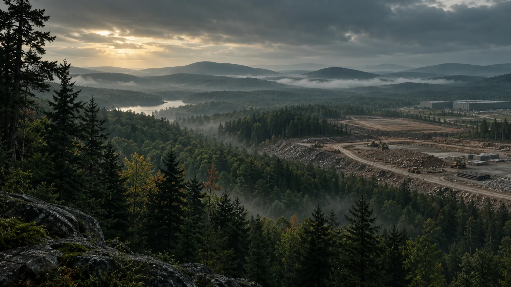
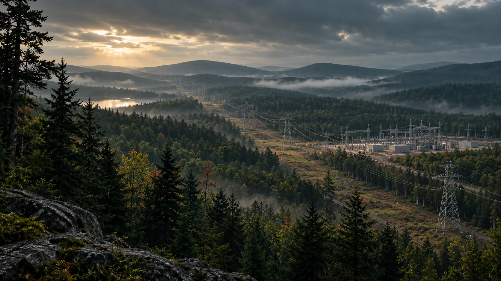
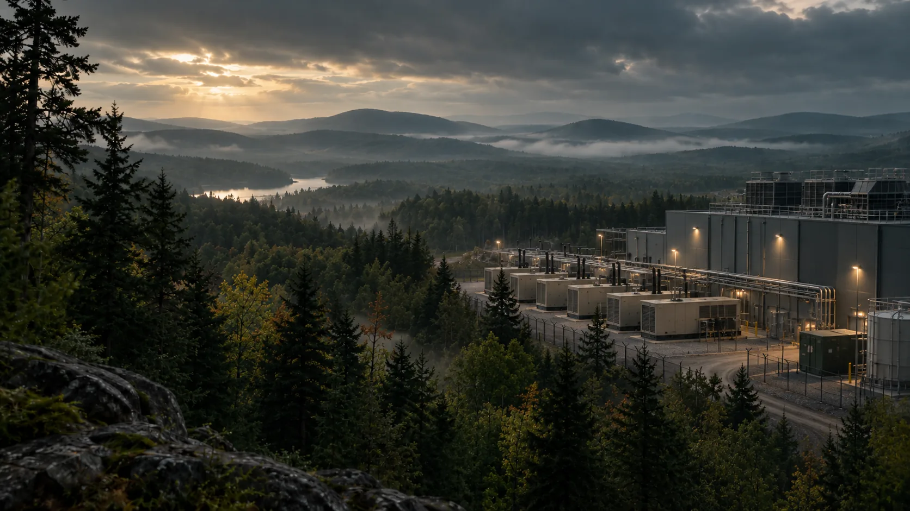
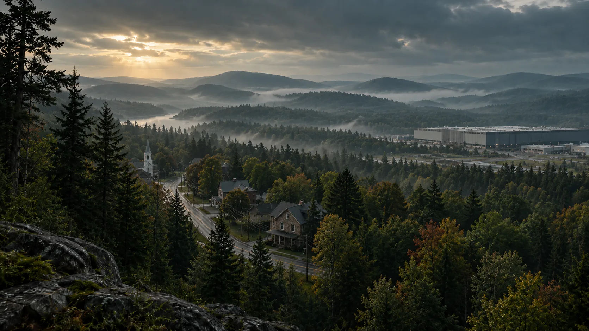
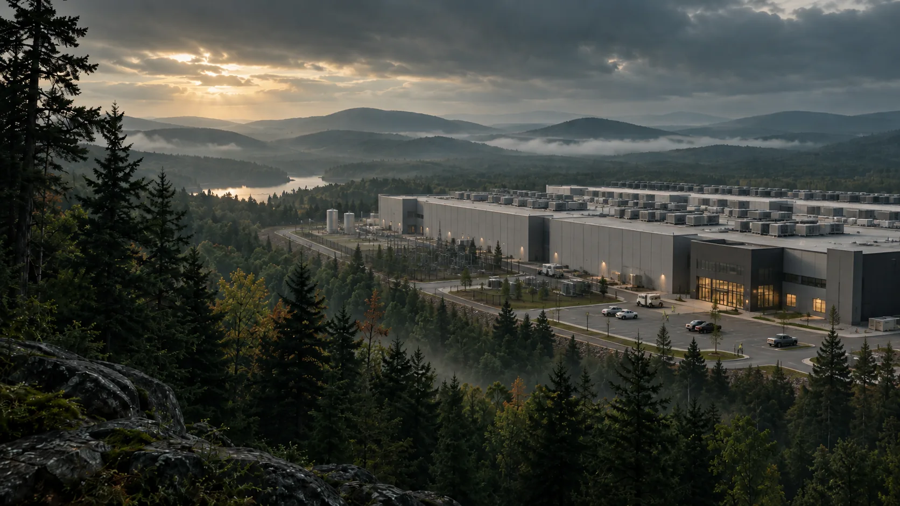

KEY CONCERNS
Explore the Issues
Six questions every Pocono community should ask before approving a data center and what the actual projects proposed in our region tell us so far. For each, we separate what's established from what depends on the specific project.
Large footprints, often on forest or farmland.
A full campus can require substantial acreage. Where that land is wooded, agricultural, or environmentally sensitive, development can mean habitat loss, new impervious surface, and fragmentation.
proposal, within a larger property
SOURCES & LOCAL CONTEXT
Project record: Pennsylvania Glacial Till →
Cooling that can draw on local water.
How much water a facility uses depends heavily on its cooling design. In a region where many homes rely on private wells, local demand is a fair question — but not every facility consumes enormous quantities.
widely cooling designs range from minimal
demand to millions of gallons per day
SOURCES & LOCAL CONTEXT
SRBC: cooling and water use ↗ (opens in a new tab) Smithfield applicant filing ↗ (opens in a new tab)Enormous, around-the-clock power demand.
A large facility draws utility-scale power continuously. Meeting that demand can require new transmission and generation, and rapid load growth can raise regional costs when supply fails to keep pace.
requiring utility-scale infrastructure


Equipment that runs day and night.
Cooling and electrical equipment create ongoing mechanical noise; backup generators add intermittent noise and diesel exhaust. In a quiet rural setting, impacts fall most on the nearest neighbors.
Monitor.
Enforce. a modeled compliance study is a
starting point, not a guarantee
SOURCES & LOCAL CONTEXT
Applicant acoustical study · PDF ↗ (opens in a new tab) Smithfield project record →Industrial scale in a landscape defined by nature.
The Poconos' scenery, quiet, recreation, and rural character are part of why people live here and visit. Large industrial development can permanently alter views, traffic, and the feel of surrounding areas.
shape a community for decades
SOURCES & LOCAL CONTEXT
Local context and reporting →

Big investment. A smaller permanent workforce.
Data centers can generate substantial construction activity and tax revenue. But construction jobs are temporary, and modern facilities need relatively few workers once operational.
A NOTE ON EVIDENCE
What About Health?
Health questions should focus on actual exposure: noise, diesel exhaust, construction activity and any site-specific air or water impacts. EPA identifies health risks from noise and diesel pollution, but those general findings do not establish the exposure or health outcome at a particular proposed site. Assess equipment, distance, operating schedules and monitoring together.
SOURCES & LOCAL CONTEXT
EPA: noise and health ↗ (opens in a new tab) EPA: diesel exhaust impacts ↗ (opens in a new tab)YOUR VOICE MATTERS
Understand the issues.
Then help shape the outcome.
These decisions are being made now, in local meetings and township offices. Informed residents make the difference.